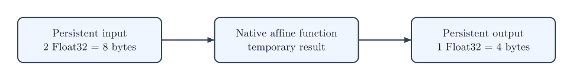
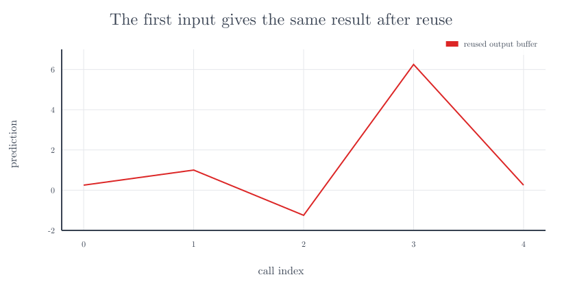

Run TensorFlow Lite inference with reusable LiteRT buffers
Abstract
Load the converted affine TensorFlow Lite model, allocate the buffers required by its compiled CPU signature, and compare repeated predictions with the Python reference. A second example illustrates stable caller buffers using Datamunge's eager affine operation.
Run the converted model
The fixture was generated by scripts/train_export_affine.py --tflite
in the TensorFlow examples checkout. Its SavedModel and Python reference
outputs are the same files used in the neighboring SavedModel report.
LiteRT loads the converted FlatBuffer and compiles the named signature
for CPU execution. The runtime chooses concrete shapes of [1, 2] and
[1, 1] even though the original batch axis is dynamic.
Build Datamunge with -DDATAMUNGE_ENABLE_LITERT=ON and set
CMAKE_PREFIX_PATH to the LiteRT C SDK prefix. The runtime determines
buffer capacities. Datamunge keeps the compiled model and both buffers
across invocations, and each returned tensor owns a copy of the result.
This example keeps the initial batch size of one.
#include <dm/dm.hpp>
#include <algorithm>
#include <array>
#include <cmath>
#include <filesystem>
#include <fstream>
#include <print>
#include <stdexcept>
int main() {
namespace n = dm::nn;
if (!n::lite_model_runtime_available()) {
std::println("LiteRT requires a Datamunge build with DATAMUNGE_ENABLE_LITERT.");
return 0;
}
const std::string fixture = "fixtures/python_affine/";
const auto path = fixture + "model.tflite";
const n::LiteModel model(path);
const auto capacities = model.buffer_sizes();
if (model.input_shape() != n::Shape{1, 2} || model.output_shape() != n::Shape{1, 1} ||
capacities[0] < 2 * sizeof(float) || capacities[1] < sizeof(float))
throw std::runtime_error("Unexpected compiled model contract");
std::ifstream table(fixture + "reference.tsv");
std::vector<std::array<float, 3>> rows;
std::array<float, 3> row;
while (table >> row[0] >> row[1] >> row[2]) rows.push_back(row);
if (!table.eof() || rows.size() != 4) throw std::runtime_error("Missing Python reference");
rows.push_back(rows.front());
std::println("Model size {} bytes. Input and output capacities {} and {} bytes.\n",
std::filesystem::file_size(path), capacities[0], capacities[1]);
std::println("| Feature 0 | Feature 1 | Prediction | Python reference |\n| ---: | ---: | ---: | ---: |");
double max_error = 0.;
for (const auto [a, b, expected] : rows) {
const auto prediction = model.predict(n::tensor({a, b}, {1, 2}));
const double actual = prediction.item();
max_error = std::max(max_error, std::abs(actual - expected));
if (prediction.requires_grad() || std::abs(actual - (.75 * a - 1.5 * b + .25)) > 1e-5)
throw std::runtime_error("Unexpected affine prediction");
std::println("| {} | {} | {:.7f} | {:.7f} |", a, b, actual, expected);
}
std::filesystem::create_directories("build");
const std::string invalid_path = "build/invalid_lite_fixture.tflite";
std::ofstream invalid(invalid_path, std::ios::binary);
constexpr std::array<char, 16> zeros{};
invalid.write(zeros.data(), zeros.size());
invalid.close();
if (!invalid) throw std::runtime_error("Could not create malformed fixture");
bool rejected = false;
try {
(void)n::LiteModel(invalid_path);
} catch (const std::runtime_error&) {
rejected = true;
}
if (!rejected || max_error > 1e-6) throw std::runtime_error("LiteRT parity check failed");
std::println("\nMaximum Python error {:.2g}. Malformed FlatBuffer rejected.", max_error);
}Model size 1044 bytes. Input and output capacities 8 and 4 bytes.
| Feature 0 | Feature 1 | Prediction | Python reference |
|---|---|---|---|
| 0 | 0 | 0.2499999 | 0.2499999 |
| 1 | 0 | 0.9999993 | 0.9999993 |
| 0 | 1 | -1.2499989 | -1.2499989 |
| 2 | -3 | 6.2499952 | 6.2499952 |
| 0 | 0 | 0.2499999 | 0.2499999 |
Maximum Python error 0. Malformed FlatBuffer rejected.
The method
For one row with two Float32 inputs and one output, the public buffers contain 8 and 4 bytes. The consumer keeps their tensor handles alive and replaces contents in place. The same affine weights are reused for every call:
A NoGradGuard prevents graph recording. affine_inference returns a temporary tensor, which is copied into the persistent output buffer; matrix multiplication may allocate temporaries. Thus stable public addresses do not establish allocation-free inference, compilation, quantization, delegate acceleration or TFLite compatibility. Model initialization and input validation occur before the repeated calls; each call costs O(input_width times output_width) in this fixture.
The concept diagram below is drawn by dm::graphics::Diagram. Its editable C++
source is the complete block below; regeneration uses the same datamunge toolchain
as the numerical examples. Exports consume the saved local SVG.
#include <dm/dm.hpp>
int main() {
std::filesystem::create_directories("build");
dm::graphics::Diagram diagram;
diagram.node("n0", {0.0, 0}, "Persistent input\n2 Float32 = 8 bytes");
diagram.node("n1", {5.2, 0}, "Native affine function\ntemporary result");
diagram.node("n2", {10.4, 0}, "Persistent output\n1 Float32 = 4 bytes");
diagram.edge("n0", "n1").edge("n1", "n2");
diagram.save_svg("build/tflite_inference_concept.svg");
}
Simple examples
#include <dm/dm.hpp>
int main(){
namespace n=dm::nn;auto input=n::zeros({1,2}),output=n::zeros({1,1});
const auto w=n::tensor({.75,-1.5},{2,1}),b=n::tensor({.25});
const auto* in_address=input.data_ptr<float>();const auto* out_address=output.data_ptr<float>();
const std::vector<std::vector<double>> queries{{0,0},{1,0},{0,1},{2,-3},{0,0}};
std::vector<double> actual,expected,index;
for(size_t i=0;i<queries.size();++i){n::NoGradGuard guard;input.copy_(n::from_vector(queries[i],{1,2}));output.copy_(n::affine_inference(input,w,b));
actual.push_back(output.item());expected.push_back(.75*queries[i][0]-1.5*queries[i][1]+.25);index.push_back(i);
if(input.data_ptr<float>()!=in_address||output.data_ptr<float>()!=out_address||actual.back()!=expected.back())return 1;}
auto p=dm::graphics::RPlot::create();p.lines(index,actual,"reused output buffer")
.title("The first input gives the same result after reuse").x_label("call index").y_label("prediction");
std::filesystem::create_directories("build");p.size(820,420).save_svg("build/tflite_inference_reuse.svg");
dm::dstruct::DataFrame t;t.add_column("call",index);t.add_column("expected",expected);t.add_column("actual",actual);std::print("{}\n\nPublic buffers: {} input bytes, {} output bytes; addresses unchanged.\n",t.to_md(),input.numel()*sizeof(float),output.numel()*sizeof(float));
}| call | expected | actual |
|---|---|---|
| 0 | 0.25 | 0.25 |
| 1 | 1.00 | 1.00 |
| 2 | -1.25 | -1.25 |
| 3 | 6.25 | 6.25 |
| 4 | 0.25 | 0.25 |
Public buffers: 8 input bytes, 4 output bytes; addresses unchanged.

Checking the theory
#include <dm/dm.hpp>
int main(){
namespace n=dm::nn;int bad=0;const auto w=n::tensor({.75,-1.5},{2,1});
try{n::affine_inference(n::zeros({1,2}),w,n::zeros({2}));}catch(const std::invalid_argument&){++bad;}
try{n::decode_npz(std::vector<unsigned char>(16,0));}catch(const std::exception&){++bad;}
if(bad!=2)return 1;std::print("Bad bias shape and invalid model archive rejected: {}.\n",bad);
}Bad bias shape and invalid model archive rejected: 2.
Conclusion
The same compiled LiteRT model and buffer allocations serve all five invocations, including the repeated first row. In the native exercise, the caller's input and output addresses stay stable while the eager affine operation allocates its own result.
References
- [LiteRT C++ inference guide](https://ai.google.dev/edge/litert/inference).